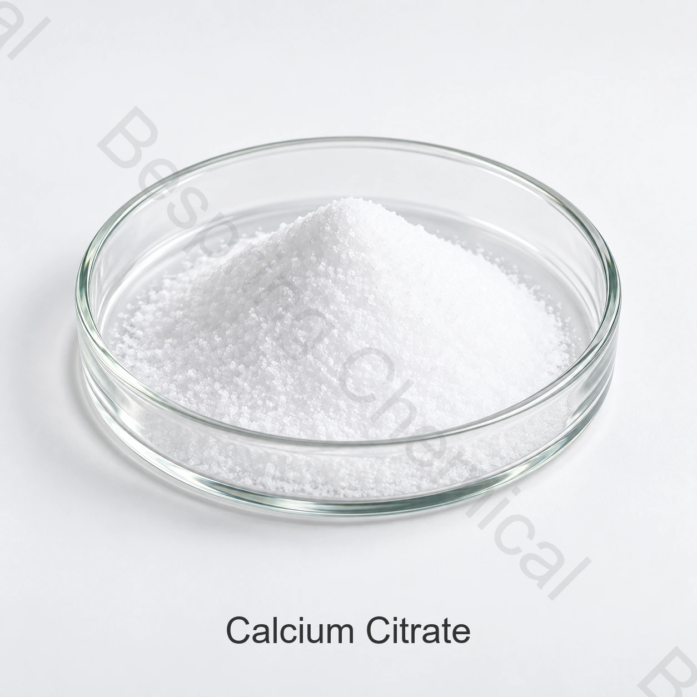

تقوية الكالسيوم
تُقيّم كمصدر للكالسيوم في الأغذية المؤهلة، والمشروبات، والخلطات المسبقة والمكملات.
المكوّن من الدرجات الغذائية: الملح المركّب؛ 333 (iii)
سترات الكالسيوم ملح الكالسيوم لحمض الستريك، يُقيّم لإضافة الكالسيوم والتنظيم والتثبيت في الأغذية والمكملات المناسبة. يحدد الشكل المميه وأساس التحليل في مواصفة الشراء.

نبذة عن المنتج
يُعرف سترات الكالسيوم المورّد على أنه رابع هيدرات3(C6H5O7)2·4H2O ، CAS 5785-44-4. يذكر الكودكس سترات الكالسيوم ك INS 333(iii) ، بينما يسجل JECFA أيضا هوية لا مائية تحت رقم CAS مختلف.
ويجب أن تكون الحدود التجارية الموردة مطابقة للصف الدقيق، وفئة الأغذية المعتزمة، وقواعد سوق المقصد، ولا يحدد اسم المنتج وحده المطابقة التنظيمية.
مجالات الاستخدام
التأكيد على الاستخدام القانوني للجرعات والأداء التقني والأثر الحسي في المنتج النهائي.
تُقيّم كمصدر للكالسيوم في الأغذية المؤهلة، والمشروبات، والخلطات المسبقة والمكملات.
قد يدعم الحموضة والتوازن المعدني في التركيبات المتوافقة.
قد يرتبط السترات بأيونات معدنية؛ تُقيّم هذه الوظيفة في التركيبة الكاملة.
قيّم الملاءمة والذوبان والقوام في الغذاء الفعلي.
تحديد شكل الإماهة، أساس الكالسيوم، حجم الجسيمات والجرعة المستهدفة.
تقييم التدفق، الضغط، التشتت، الآثار الحسية.
البيانات التقنية المزودة
القيم أدناه مواصفات مرجعية تجارية، وليست نتائج تحليل لدفعة أو إثباتاً للمطابقة لجميع الأسواق.
| عنصر الاختبار | المواصفة |
|---|---|
| محتوى سترات الكالسيوم، على أساس جاف | FCC-IV: 97.5–100.5%; USP24: 97.5–100.5% |
| زرنيخ | FCC-IV/USP24: ≤0.0003% |
| الفلوريد | FCC-IV/USP24: ≤0.003% |
| المادة غير القابلة للذوبان في الحمض | FCC-IV/USP24: ≤0.2% |
| الرصاص | FCC-IV: ≤0.0002%; USP24: ≤0.0001% |
| المعادن الثقيلة، مثل Pb | FCC-IV: غير محدد؛ USP24: ≤0.002% |
| الفقد بالتجفيف | FCC-IV: 10.0–14.0%; USP24: 10.0–13.3% |
| الرطوبة المتبقية | FCC-IV: ≤0.003%; USP24: ≤0.0002% |
| النطاق | لم يتم تحديد حد كامل |
| المظهر | مسحوق أبيض أو مسحوق بلوري أبيض |
ملاحظة المواصفة: تختلف أرقام CAS في المراجع عن رقم الشكل رباعي الماء المعروض. يلزم تحديد حالة الإماهة وأساس المحتوى وطرق الاختبار عند المقارنة. لا تثبت الإشارة إلى FCC-IV أو USP24 المطابقة لإصدار أحدث.
دعم التأهيل
طلب المواصفة/TDS الحالية، SDS ، الطرق و COA ممثل أو دفعة.
(ج) التحقق من الوثائق المنطبقة الصادرة عن اللجنة الاستشارية المعنية بالمسائل البرنامجية والتنفيذية (HACCP) و(كوشر) و(هالال) والمنظمة الدولية لتوحيد المقاييس فيما يتعلق بالمنتج والموقع بالتحديد.
استعراض الفاو/منظمة الصحة العالمية لسياق الهوية
التخزين والمناولة
أسئلة المشتري
(ج) سترات الكالسيوم هو ملح كالسيوم من حمض الاستشهاد المستخدم في الأغذية والمكملات المناسبة لتحصين الكالسيوم والعازل ودعم التركيب.
نطاق المحتوى المرجعي هو 97.5–100.5%. يرجى تأكيد المواصفة الموقعة وشهادة التحليل (COA).
والتعبئة المرجعية هي 25 كيلوغراماً لكل كيس، والحد الأدنى المطلوب هو 500 كيلوغرام.
اطلب المواصفات/ورقة البيانات الفنية، ورقة السلامة، شهادة التحليل (COA) والشهادات الغذائية المعمول بها.
توفير نموذج التطبيق، الدرجة أو الشكل المميه، المواصفة، الكمية، الوجهة وتاريخ التسليم.
المكونات ذات الصلة
راجع الهوية، المواصفات، التطبيقات، وتفاصيل المصادر لهذا المكون المرتبط.
راجع الهوية، المواصفات، التطبيقات، وتفاصيل المصادر لهذا المكون المرتبط.
راجع الهوية، المواصفات، التطبيقات، وتفاصيل المصادر لهذا المكون المرتبط.
توريد وفق المواصفات المتفق عليها
حدد التطبيق، المواصفات، الكمية، التعبئة، الوجهة والمستندات المطلوبة.